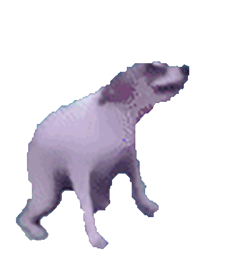
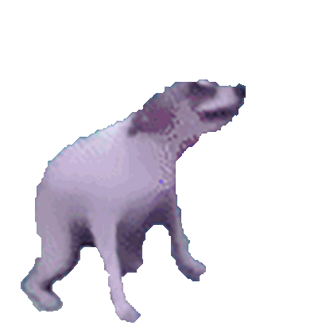
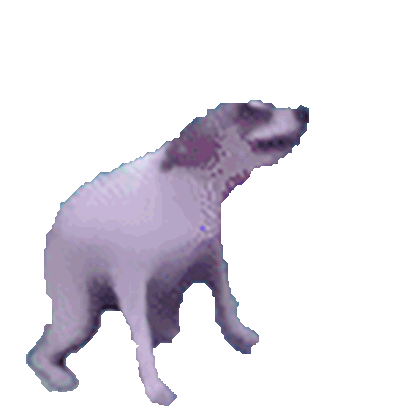

bjurd
Anyone can make a generic, flat, and boring page with rounded boxes,
but personality takes talent!
The rest of the website is down here

Anyone can make a generic, flat, and boring page with rounded boxes,
but personality takes talent!
The rest of the website is down here
I am a passionate and versatile developer who has been immersed in technology since the age of 7. With a strong foundation in both front-end and back-end development, I bring experience across various languages such as C, C++, C#, JavaScript, Java, Python, PHP, Lua, HTML, and CSS.
I've worked on a range of projects including website creation, server and database management, and collaborative software development using tools like Visual Studio, IntelliJ, Git, and Selenium. I enjoy problem-solving, learning new technologies, and creating efficient solutions in both Windows and Linux environments.
Currently pursuing a degree in Computer Software Engineering Technology, I've also completed internships involving real-world development and systems administration. Whether it's writing clean code, managing repositories, or mentoring peers, I strive to bring professionalism and creativity to every task.
Holy yap
A Garry's Mod server addon that connects in-game text chat with Discord for cross-communication between them. It also supports custom commands that can be executed in Discord to perform actions in-game.
This project heavily uses the Discord API and optimized networking to keep the two separate services in sync with minimal performance impact.
Primary Language: Lua
A Garry's Mod server addon that allows Expression 2 chips to create and manipulate user interfaces using the Derma and VGUI libraries.
While this may not seem like much, it becomes more impressive when learning that Expression 2 chip cores only run on the server side, meaning that all UI elements must be created and maintained over the network. This requires clever manipulation of the information that is networked.
Primary Language: Lua
An OpenGL program that can load 3D Wavefront OBJ files and render them in a window, with texture support. It has a basic physics engine using the Open Dynamics Engine (ODE), and a modular entity system that allows for easy addition of new objects with custom behaviors.
This was made as an experimental playground to dive into 3D graphics and physics engines, as well as implementing an object system for Object Oriented Programming in a language with no objects!
Primary Language: C23 (ISO/IEC 9899:2024)
A Discord bot that allows users to upload and download large files much larger than Discord supports. In theory, files are also stored more securely because of them being encoded. With both a custom upload and download command files can be sent and received directly with the bot's filesystem. Information about uploaded files is also stored on Discord within the message content, so virtually no disk space or database space is used by the bot.
The file size limitation is bypassed by splitting files into chunks and converting each chunk into a binary image, where black pixels represent 1's and white pixels represent 0's. Red pixels are used to detect the end of a chunk.
Primary Language: Python